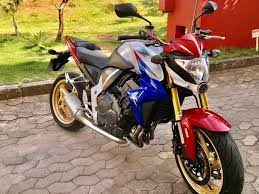

BigTrail
São motos que foram projetadas para enfrentar trilhas e terrenos difíceis. Atualmente são consideradas motos para qualquer terreno, sendo muito utilizada em centros urbanos. O diferencial delas está na potência e no tamanho, são capazes de tranpor em grandes distâncias.
Possuem pneus próprios para tração em terra, suspensão de alto curso e maior espaço livre do solo, facilitando a passagem por obstáculos.
Os motores de 125cc até 1250cc, permitem arranques e acelerações rápidas.
Os modelos mais comercializados tem de 125cc a 250cc.
A velocidade máxima pode chegar a 130km/h.
A mais vendida desse modelo é a Honda CG160 Titan.
Comparado as esportivas, o guidão é mais alto e a posição do piloto é menos inclinada para a frente, tornando-a mais confortável.
Os motores dessas motos são de 600cc a 1000cc, oferecendo um bom desempenho em estradas.

Construídas com matérias mais leves e resistentes, design moderno e alta tecnologia.
Os pneus são largos para aumentar a aderência e auxiliar nas manobras em curvas.
Os motores são de 300cc a 1100cc que melhoram a potência, e podem chegar até 300km/h.Tem motores que variam de 1100cc a 1400cc.

Motos de uso geral
Também conhecidas como STREET, são as motos mais utilizadas e comercializadas, devido à sua economia e versatilidade. São simples, resistentes e funcionais.


Naked
São parecidas com as esportivas, mas não possuem carenagem, são usadas em centros urbanos e também em estradas.
Esportivas e Superesportivas
São motos projetadas para privilegiar a velocidade. Para maximizar a aerodinâmica, possuem carenagem por toda sua extensão e as pedaleiras são mais inclinadas para trás, fazem o piloto inclinar para a frente.